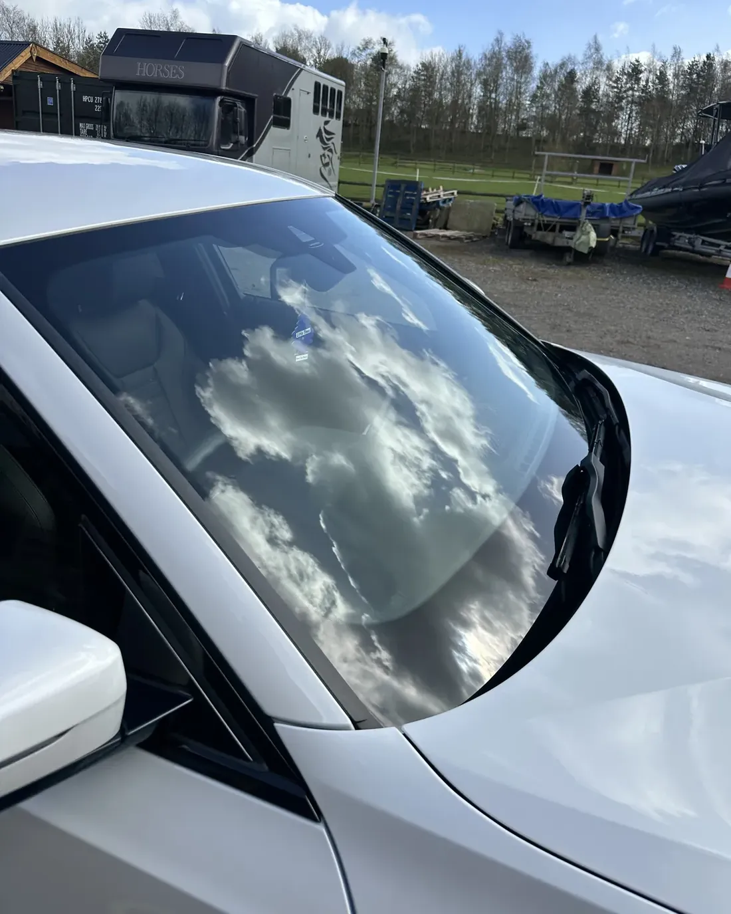
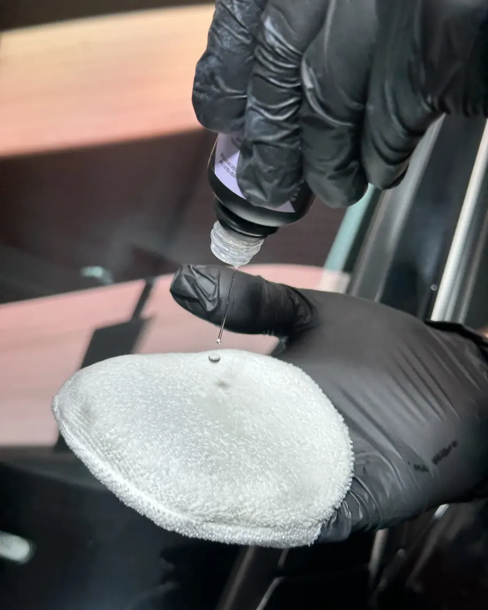
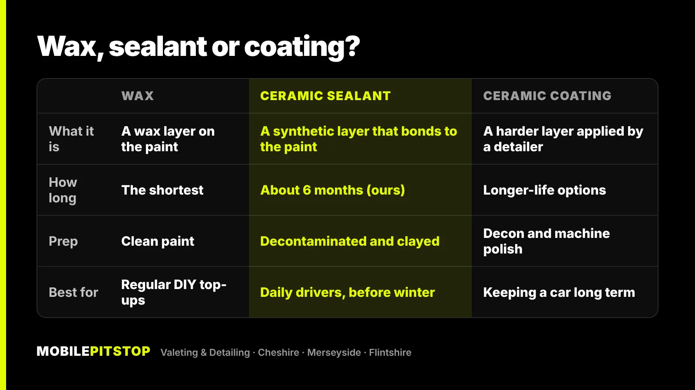

All three do the same basic job: they put a thin layer on top of your car's clear coat, so water beads and runs off, dirt struggles to stick, and washing gets easier and gentler. The difference is how long that layer lasts, how much preparation it needs, and who can realistically apply it.
In short: a wax is the easiest to apply and the shortest-lived. A ceramic sealant lasts longer and suits most daily drivers. A ceramic coating is the longest-lasting option, but it needs the paint corrected first and has to be applied properly, which makes it a bigger job.
None of them is the right answer for every car. Below is how each one works, what to expect, and how to choose.
Paint protection is a sacrificial layer. Rain, road film, bird droppings and the wash mitt all meet the protection first, and it wears away slowly instead of the clear coat. Because the surface is slick and water-repellent, more dirt comes off with the pre-wash and the rinse, so there's less to scrub off by hand.
What protection can't do matters just as much:
Wax is the traditional option. It's applied by hand, left to haze and buffed off, and it gives a warm, deep gloss that a lot of people like, especially on dark colours.
The trade-off is durability. Wax sits on top of the paint rather than bonding to it, so it wears off faster than a sealant or coating, particularly through a wet winter or with regular use of strong cleaning products. Expect to top it up regularly if you want to keep the beading.
Wax suits you if you enjoy looking after the car yourself and don't mind reapplying it. On our jobs, the In & Out Deep Clean finishes with a protection wax on the paint, so the car leaves protected after its full reset inside and out.
A sealant is synthetic rather than natural. A ceramic sealant uses similar chemistry to a coating, in a thinner layer that's quicker to apply. It bonds to the paint instead of just sitting on it, which is why it lasts longer than wax and copes better with weather and washing.
Because it bonds to the paint, preparation matters more. A sealant applied over tar spots, iron fallout and road film bonds to that contamination instead, and won't last as long. That's why we clay the paint first, so it's glass-smooth before the sealant goes on.
For most cars that are driven every day and washed every week or two, a sealant is the sensible middle ground: good protection, without the cost and preparation of a coating. It's what our Protection Detail uses: a 6-month ceramic sealant applied after a full deep clean and clay bar, with a Glaco hydrophobic coating on the glass. It's a good choice before winter, when salt and grit are at their worst; our guide to protecting your paint before winter goes into that in more detail.

A ceramic coating is a liquid that cures into a hard, durable layer on the paint. It's the longest-lasting of the three and makes washing easier for longer, which is why people choose it for a new car or one they plan to keep.
The catch is that a coating locks in whatever is underneath. Coat swirled paint, and you'll have well-protected swirls. So the paint has to be corrected first, and the coating has to be applied evenly and given dry conditions to cure. It's skilled work, and not something to rush on a damp driveway.

Our Ceramic Coating service is booked by quote, because the weather is part of the job. It follows the full preparation:
There are longer-life coating options as well, and we'll talk you through them when we quote.

A simple way to decide:
If you're unsure, send us a few photos in daylight and we'll tell you straight which service the car needs, including when a cheaper one will do.
How a car is washed decides how long its protection lasts, whichever type you choose. On the Wirral and around Chester, months of salty, gritty winter roads wear protection down quickly, and a careless wash wears it down faster still. These habits help:
For more on that, see our article on why hand car washes scratch your paint. If you're not sure which level of service your car needs overall, our guide to car valet vs car detail explains the full range.